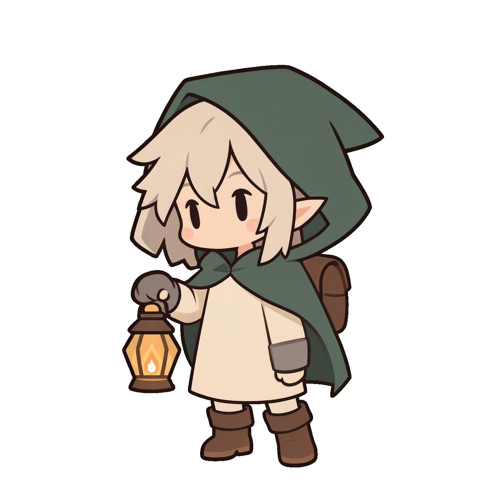
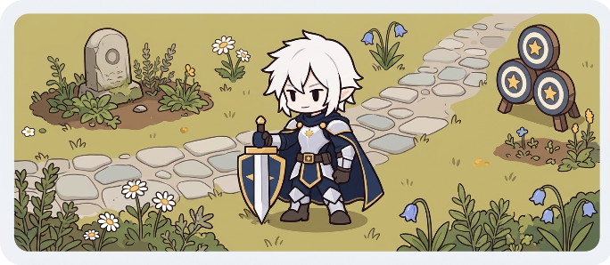

CINIS.
一款把「自律」做成角色扮演的游戏化习惯应用：用三档模式（旅者 / 骑士 / 深渊）承接不同的强度与后果，让每天的坚持有进度、有分量。


项目概述 Overview
01CINIS 把自律重新讲成一个故事：用户选定一种「模式」，每天完成任务、积累魂火，在阶段结算时获得经验与称号；一旦中断，则进入该模式对应的后果与回归路径。产品覆盖从引导、今日任务、专注、完成反馈到阶段结算与成长的完整闭环。
计数口径：CINIS 原型共 23 屏（另含 1 个底部弹层）；本地已抓取 10 屏真实截图；本页展示其中 8 屏关键状态。不使用相似页面替代未抓取状态。
背景与问题 Background & Problem
02许多自律 / 习惯类应用以「连续打卡 + 中断清零」驱动用户。以下为本项目的设计出发点，而非已验证的行业或用户结论：单纯依赖连续打卡，容易把「中断」等同于失败与羞耻，短期有效、长期难以坚持。
- 假设把失败变成「有后果但可挽回 / 可叙事」的环节，比「清零惩罚」更有利于长期坚持。
- 方向用游戏化角色、阶段与成长，把抽象的坚持转化为可感知的进度与叙事。
- 边界这是设计推演，未经用户研究/测试验证；不代表所有用户，也不引用任何比例或结论数据。
设计目标 Design Goals
03围绕上述出发点，设定三个目标（目标表述，不是已实现的成果）：
有后果
让中断具备真实分量，但可通过「挽回 / 复燃 / 重新开始」继续，而非一票否决。
有梯度
用三档强度承接不同承受力的用户，而非一套规则打天下。
有成长
把进度外化为魂火、阶段与称号，让正反馈可见、可积累。
研究依据 Research Basis
04当前没有可引用的用户研究、访谈或可用性测试材料。本节如实标注缺口，不编造样本、比例、满意度或结论。
素材待补充：用户研究 / 访谈 / 可用性测试（未提供，TODO）产品策略 · 三模式 Strategy · Three Modes
05 · 重点CINIS 用三档「契约强度」承接不同用户：切换模式时，卡片底色、强调色、魂火上限、门槛与失败后果随之改变——不是换色，而是换一整套规则与叙事。
无门槛
起点最低、压力最小。中断后本轮无损失，魂火照常结算、记录计入历史；从一簇小火继续即可。
誓约
以「誓约」承诺强度。中断进入誓约警戒，损失可在后续追回（重燃 / REKINDLE）——有张力，不绝望。
契约
回报最高、后果最重。中断进入「契约已断」的终止与重新开始；魂火从零，但永久成长（经验 / 称号）保留。
- 强度梯度旅者无门槛 → 骑士誓约 → 深渊契约；难度与后果逐级上升。
- 后果差异旅者「本轮无损失」；骑士「可追回」；深渊「归零重开」——三套失败分支各自独立成页。
- 不收回「称号只升不降，失败不收回」——永久成长与短期损失分离，降低放弃成本。
模式与失败机制对留存 / 坚持的影响为设计意图，尚未经研究验证。

源：项目原始角色素材（1472×1472 透明 PNG）。仅旅者具备明确 Lv1–Lv3 阶段图；骑士 / 深渊对应阶段图未提供，暂不接入。
信息架构 Information Architecture
06底部四个 Tab：今日 · 目标 · 成长 · 我的；以「今日」为中心承载每日行动，目标 / 成长 / 设置在下一层展开。
今日 Today
- 今日任务
- 完成方式弹层
- 专注计时
- 任务完成反馈
- 阶段结算
目标 Goals
- 目标列表
- 新建目标
- 目标详情
- 编辑目标
成长 Growth
- 个人成长
- 角色档案
- 成就墙
我的 Me
- 历史记录
- 提醒设置
- 数据与隐私
来源：原型 `routes.ts` / `tabs.ts`（真实路由与 Tab 定义），非估测。
核心流程 Core Flow
07 · 重点主链路：模式 / 角色确立 → 今日任务 → 完成方式 → 专注计时 → 完成反馈 → 阶段结算；中断则进入对应模式的失败分支与回归。


待补：角色 / 模式确立（roles / onboarding）、完成反馈（taskDone）、阶段进度与结算（stage / settle）、失败分支（terminal / rekindle）等状态截图未抓取 —— 保留标记，不用相似页面替代。
关键交互 · 魂火成长 Key Interactions · Soulflame
08 · 重点交互以「即时反馈 + 全局联动」为原则：切换模式时全站换肤；任务勾选、进度与计数同步；底部导航指示块只动 transform，保证流畅。魂火作为核心反馈：完成任务累积魂火、推进阶段，结算时转化为经验与称号。
切换后，全站底色 / 强调 / 魂火上限 / 角色随之变化——让「选择模式」成为一次有意义的承诺。
倒计时真实走动、可暂停继续；用户看到专注在推进，而不是一个静止数字。
勾选即时反馈：完成态、删除线、进度与「已完成 N 项」同步变化。
完成任务累积魂火、推进阶段；阶段结算把魂火转为经验与称号，形成正反馈闭环。
实现细节（次级注释）：计时用 setInterval 真实倒计时；底部导航指示块用 translate3d + cubic-bezier(.22,1,.36,1) 380ms、仅动 transform 以保 60fps；页面淡入 220ms。以上为实现参数，仅在需证明工程细节时参考，不进入主叙事。

魂火随任务增长，里程碑石碑标记阶段推进；阶段结算把魂火转为经验与称号，成就墙收集徽章。永久成长（经验 / 称号）不因失败收回。
成长场景图以骑士为例；旅者 / 深渊对应成长场景素材未提供，界面仅以该图示意。


视觉系统 Visual System
09取自真实设计令牌（`tokens.ts` / `global.css`，非估测）：浅色底 + 橙色主色，三模式各带独立深色主题。
核心色板
模式主题（深色卡片）
字体与形状
字族：OPPO Sans 4.0（产品 UI）· 字号 10 / 12 / 14 / 16 / 20 / 26 / 28 · 圆角 chip 9 · card 16 · nav 35 · pill 999 · 画布 390×844，边距 24，导航 70。
最终界面 Final UI
10 · 真实截图真实界面截图（原型 23 屏中已抓取 10 屏；本页展示其中 8 屏关键状态），大小图交替，每张对应一条设计说明。
细节 · 魂火量表


未抓取状态（角色确立 / 完成反馈 / 阶段结算 / 失败分支等）保留待补，不用相似页面伪造。
原型体验 Prototype
10b真实可运行原型（无需依赖内嵌即可理解本页）：优先 GitHub Pages 独立地址，Netlify 作镜像备用。
反思 Reflection
11CINIS 的设计核心是「用三档强度与可挽回的后果，让自律更像一段愿意继续的故事」。三模式、主流程与魂火成长构成一个闭环：选择强度 → 每日行动 → 专注 → 反馈 → 结算 / 回归。
看得见的进度——感受得到的后果。
个人角色、项目周期、用户研究、可用性测试与效果指标：TODO —— 无证据不写。原始 Figma 链接：TODO。